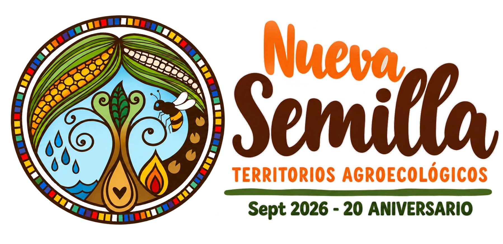

Saltar al contenido
Desde 2006 · Córdoba, Argentina
20 años cultivando comunidad ↗

Menú
☰
Asesoramiento Profesional
Propuestas Pedagógicas
Propuestas de Compra
Mapa
Quiénes Somos
Nueva Semilla
Territorios agroecológicos de Córdoba. Activá JavaScript para recorrer la red.
Leer Agroecología a la Carta